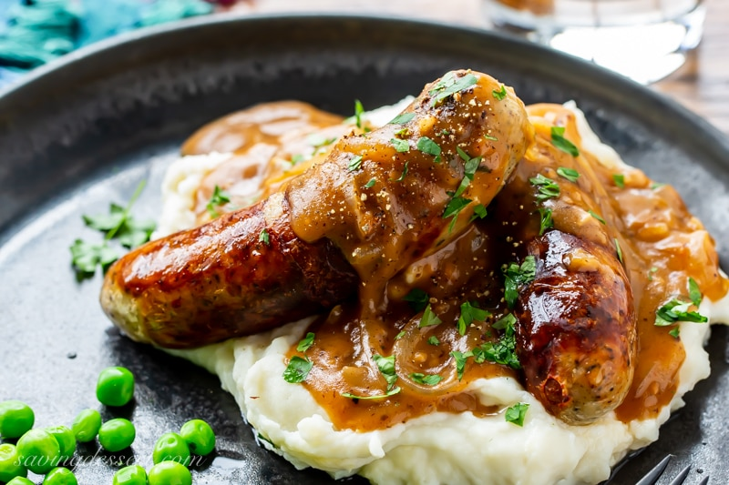

<!DOCTYPE html>
<html lang="en">
<head>
     <meta charset="UTF-8">
     <meta http-equiv="X-UA-Compatible" content="IE=edge">
     <meta name="viewport" content="width=device-width, initial-scale=1.0">
     <title>Bangers and mash</title>
     <link rel="preconnect" href="https://fonts.googleapis.com">
<link rel="preconnect" href="https://fonts.gstatic.com" crossorigin>
<link href="https://fonts.googleapis.com/css2?family=Fascinate&display=swap" rel="stylesheet">
     <link rel="stylesheet" href="../styles.css">
</head>
<body>
     
</body>
</html>
<h1 id="heading">BANGERS AND MASH</h1>

<h2>A SIMPLE AND SAVOURY DISH</h2>
<p> <strong>Bangers and mash</strong> , also known as sausages and mash, is a  simple to make
    traditional British dish, consisting of sausages served with mashed potatoes
     . It may consist of one of a variety of flavoureds
      sausages made of pork, lamb, or beef</p>
      <h2>INGRIDIENTS</h2>
      <ul>
          <li> High quality pork sausages</li>
          <li>Yukon Gold or other medium-starch Potatoes</li>
          <li>Salt</li>
          <li>Unsalted butter</li>
          <li>Onion gravy</li>
          <li>Cup of Hot milk</li>
      </ul>

      <h2>METOD</h2>
      <ol>
          <li>Preheat the oven to 400 degrees F</li>
          <li>Make the onion gravy in advance</li>
          <li>Place the potatoes in a pot of water and add the salt. Bring to a boil, lower
               the heat to a steady simmer and cook for about 15-20 minutes</li>
           <li>Thoroughly drain the potatoes and place them back in the empty pot set over
                very low heat just to maintain warmth</li>   
           <li> Mash the potatoes until fluffy and you've reached the desired degree of smoothness</li>
           <li>Use a spoon to stir in the butter. Once melted stir in the hot milk gradually</li> 
           <li>To Prepare the Sausages: While the potatoes are boiling place the sausages in
                a baking dish with a little oil and roast the sausages for about 10 minutes</li>
           <li>To serve, place a mound of mashed potatoes on each plate, lay the sausages on
                the mashed potatoes and top with onion gravy</li>
           <li><em>SERVE AND ENJOY</em></li>          
      </ol>
      <a href="#heading">Back to the top</a>
      <a href="../index.html">Back to main page</a>
